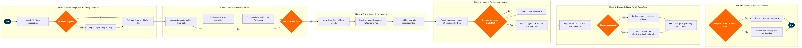

Tier Status & Upgrade Management
Customer Experience & Loyalty › Customer Experience Operations · 20 L4 steps · 6 phases · 4 decision gates · Updated 2026-10-01 20:51
📊
Process Flow Diagram (BPMN)

📋
L4 Process Steps
| Step | Step Name | Role / Swim Lane | System | Input | Output | KPI | Dec? | Exc? |
|---|---|---|---|---|---|---|---|---|
Phase 1 1.1 |
Ingest flight activity from PSS transaction feed | Loyalty Platform Engineer | Amadeus Altéa PSS | Post-departure flight coupons and e-ticket transaction records | Raw activity records loaded into loyalty staging table | Transaction ingestion latency ≤4 hours post-departure; error rate <0.1% | N | Y |
| 1.2 | Validate fare class earning eligibility vs ATPCO rules | Loyalty Operations Analyst | ATPCO Fare Data | Fare basis code and booking class from ingested transaction | Earning eligibility flag (qualifying / non-qualifying) per segment | Eligibility rule coverage ≥99.5% of active fare families; <0.5% manual review rate | Y | Y |
| 1.3 | Post qualifying miles/segments/spend to member ledger | Loyalty Platform Engineer | Amadeus Altéa Loyalty | Validated earning eligibility flag and segment distance/revenue data | Qualifying Miles (QM), Qualifying Segments (QS), and Qualifying Spend (QSP) posted to member account | Ledger posting accuracy ≥99.9%; retro-credit request rate <2% of eligible transactions | N | Y |
Phase 2 2.1 |
Aggregate qualifying credits against tier thresholds | Loyalty Data Analyst | AWS Redshift | Rolling 12-month QM, QS, and QSP ledger totals per member | Tier progress score and distance-to-next-tier metric per member | Batch refresh cycle ≤6 hours; member progress accuracy vs ledger ±0 credits | N | N |
| 2.2 | Apply partner airline and credit card earning multipliers | Loyalty Operations Analyst | Amadeus Altéa Loyalty | Base qualifying credits and active partner multiplier rules | Adjusted qualifying total inclusive of promotional and partner bonuses | Multiplier application accuracy ≥99.8%; promotional credit disputes <0.3% of bonus transactions | N | Y |
| 2.3 | Flag members within 10% of next tier threshold | Loyalty CRM Manager | Salesforce Marketing Cloud | Tier progress score from Redshift; tier threshold configuration | Proactive tier-progress nudge email or push notification sent to member | Nudge email open rate ≥35%; incremental qualifying activity uplift ≥8% among nudged cohort | N | Y |
| 2.4 | Assess whether tier upgrade threshold has been met | Loyalty Platform Engineer | Amadeus Altéa Loyalty | Adjusted qualifying total; tier programme threshold table | Tier upgrade trigger event or no-action record | Tier threshold assessment latency ≤1 hour of qualifying transaction posting; false-positive rate <0.01% | Y | Y |
Phase 3 3.1 |
Award new tier status in Amadeus Altéa Loyalty | Loyalty Platform Engineer | Amadeus Altéa Loyalty | Tier upgrade trigger event from step 2.4 | Member profile updated with new tier code and tier validity dates | Tier award processing time ≤30 minutes from trigger; tier award error rate <0.05% | N | Y |
| 3.2 | Provision upgrade coupons and lounge access in PSS | Loyalty Fulfilment Analyst | Amadeus Altéa PSS | New tier code from step 3.1; benefit entitlement table per tier | Upgrade coupons (eUTCs), lounge access certificates, and priority boarding flags active in PNR | Benefit provisioning completion ≤2 hours of tier award; coupon redemption error rate at airport <0.5% | N | Y |
| 3.3 | Dispatch tier upgrade congratulation and benefit summary | Loyalty CRM Manager | Salesforce Marketing Cloud | Tier award event; member contact preferences; benefit entitlement copy | Personalised congratulation email with new tier benefits, card dispatch confirmation, and portal link | Email delivery within 2 hours of tier award; delivery success rate ≥98%; unsubscribe rate <0.2% | N | N |
Phase 4 4.1 |
Receive upgrade request at booking or check-in gate | Check-In Agent / Reservations Agent | Amadeus Altéa PSS | Member upgrade coupon or tier-based complimentary upgrade entitlement | Upgrade request queued against target cabin class inventory | Upgrade request capture rate ≥99% of eligible members; request queue processing time ≤60 seconds | N | Y |
| 4.2 | Check upgrade class seat inventory availability in PSS | Reservations Agent / Automated Upgrade Engine | Amadeus Altéa PSS | Upgrade request; flight date/route; target cabin upgrade bucket (e.g., C class) | Inventory availability confirmation or waitlist placement decision | Upgrade clearance rate for top-tier members ≥70% on eligible routes; waitlist clear rate ≥50% by T-24h | Y | N |
| 4.3 | Process upgrade rebook or manage waitlist clearance | Automated Upgrade Engine / Check-In Agent | Amadeus Altéa PSS | Confirmed upgrade inventory; priority-ranked waitlist | Upgraded PNR with new cabin class; deducted upgrade coupon; or maintained waitlist record | Upgrade processing time ≤5 minutes at check-in; coupon deduction accuracy 100% | N | Y |
| 4.4 | Reissue boarding pass with new cabin assignment | Check-In Agent / Self-Service Kiosk | Amadeus Altéa PSS | Confirmed upgraded PNR; new seat assignment in target cabin | Reissued boarding pass with updated class of service and seat number | Boarding pass reissue time ≤2 minutes; boarding document error rate <0.01% | N | Y |
Phase 5 5.1 |
Log tier dispute or competitive status match claim in CRM | Loyalty Customer Service Agent | Salesforce CRM | Member dispute submission (missing credits, incorrect tier, status match request) with supporting documents | Case record created in Salesforce with category, priority, and SLA timer | Case creation time ≤5 minutes; first response SLA ≤4 business hours for elite members | N | N |
| 5.2 | Review documentation and approve or reject dispute | Loyalty Operations Analyst | Salesforce CRM | Case record; flight/transaction records from Altéa Loyalty; submitted evidence | Dispute resolution decision (approved / rejected) with rationale documented | Dispute resolution time ≤5 business days; first-contact resolution rate ≥80%; approval accuracy vs policy ≥99% | Y | Y |
| 5.3 | Apply manual tier or credit adjustment in loyalty system | Loyalty Operations Analyst | Amadeus Altéa Loyalty | Approved dispute decision from step 5.2; adjustment quantity and type | Manual credit or tier amendment applied to member account; case closed in Salesforce | Adjustment posting accuracy 100%; case closure within 1 business day of approval | N | Y |
Phase 6 6.1 |
Run end-of-qualifying-period tier review batch job | Loyalty Platform Engineer | AWS Redshift | Member qualifying credit totals for the expiring programme year; tier threshold table | Tier renewal, downgrade, or extension recommendation dataset | Batch job completion within 4-hour overnight window; zero failed member records; data reconciliation variance <0.01% | N | Y |
| 6.2 | Assess requalification threshold met or missed | Loyalty Platform Engineer | Amadeus Altéa Loyalty | Recommendation dataset from step 6.1; requalification threshold per tier level | Member disposition: renew at current tier / upgrade tier / downgrade tier / place on grace period | Requalification assessment accuracy ≥99.99%; zero incorrect downgrades of members who requalified | N | Y |
| 6.3 | Execute tier renewal, downgrade, or extension notification | Loyalty CRM Manager | Salesforce Marketing Cloud | Member disposition from step 6.2; communication template per tier outcome | Personalised renewal/downgrade/extension email with new tier validity, benefit summary, and re-earn guidance | Notification delivery within 24 hours of batch completion; downgrade appeal rate <5% among downgraded members | N | N |
📋